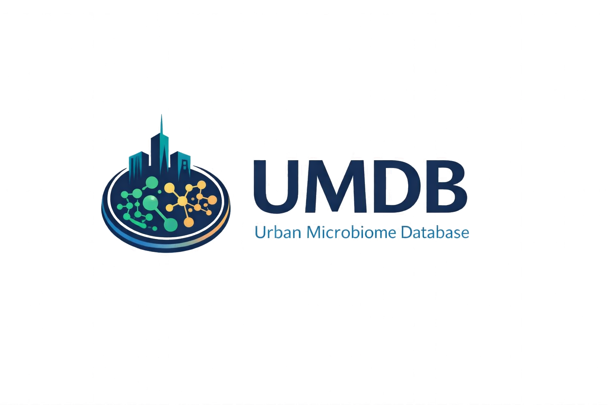

{kind=link}
{kind=link}
Bundle
Full Press Kit Archive
Single ZIP containing the approved files, guide, manifest, and boilerplate.
This page packages the current public-facing identity for articles, presentations, repository listings, talks, posters, and general media use. The preferred file for most uses is the transparent horizontal logo.
The recommended lockup for most editorial, web, and slide use.

Approved files for press, documentation, web embeds, and archival reference.
Single ZIP containing the approved files, guide, manifest, and boilerplate.
Best default choice for media and page layouts.
Use when transparency is not supported by the target workflow.
Internal comparison view showing alternate directions explored for the mark.
Historical concept retained for project recordkeeping and design provenance.
The logo and site currently lean on a navy, teal, blue, and amber scientific palette.
Short copy suitable for slides, articles, program blurbs, or repository descriptions.
{kind=link}
{kind=link}